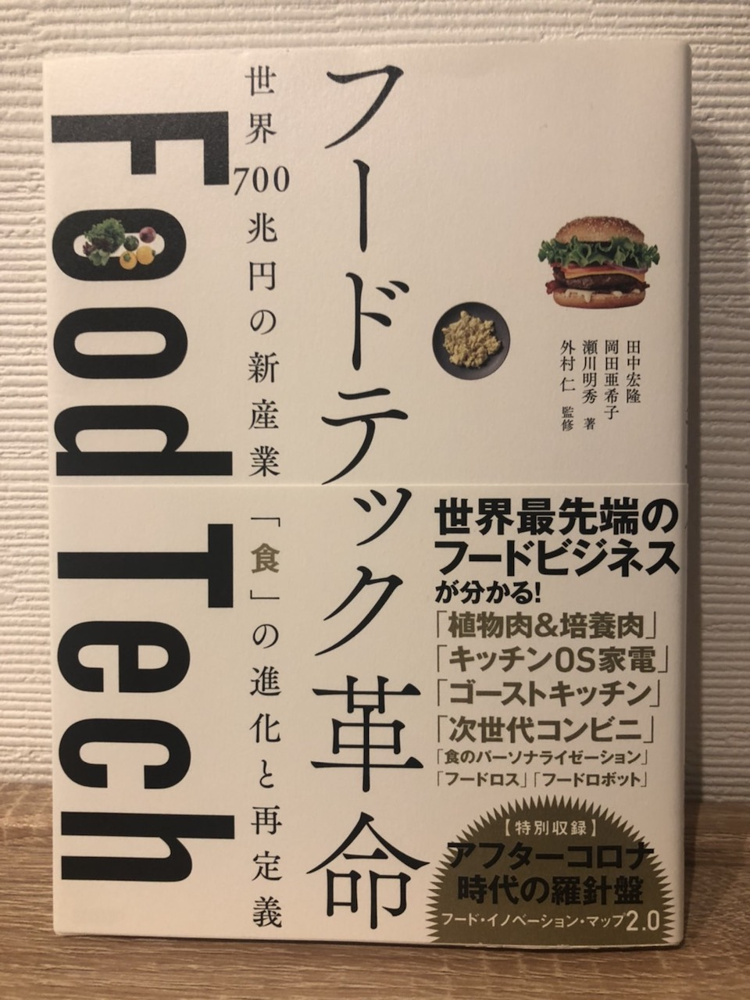

●現状と食のイノベーションについて
食のイノベーションについての知識をつけるのに今回購入した本↓

購入はこちら
世界中でどのようなフード革新が起こっているのか詳しく書いてある。
チャプター2まで読んだ感想では、人々の食文化の進化に関する内容が多かった。例えば、キッチンOSのや料理自体をどのように楽しく行うのか。
food for well-beingを実現するための技術やデザインなどの紹介。
新型コロナウイルスで変化した食に関するニーズを捉えて、次世代の食の価値を知れる。
フードロスに関するフードテックでは、急速冷凍技術で面白いものを見つけた。
デイブレイク株式会社
会社の強みを生かしたフードロス削減への取り組みの一例である。
また、飲食店での売れ残りをなくすという観点からの取り組みとしてあげられていたのは、コークッキングのTABETEというサービス。
TABETEについて
株式会社コークッキング
TABETEは、まだ食べられるのに売り切るのが難しい食品をお手頃な価格で出品し、それを見た人に購入してもらうというサービス。
店側にも消費者にも利益になる点が素晴らしいと思うので、今度試してみたいと思う。
コークッキングは他にもフードロス改善に向けた事業を行なっている。
直売所で余ってしまった農産物を駅で販売する取り組み(TABETEレスキュー直売所)など。
●今後の行動方針
①家庭、農家、企業、それぞれの食品ロスに至る過程を調査する。
②フードテック革命を読む
③アプリを作るとなった時のための学習（xcode,Swiftなど)